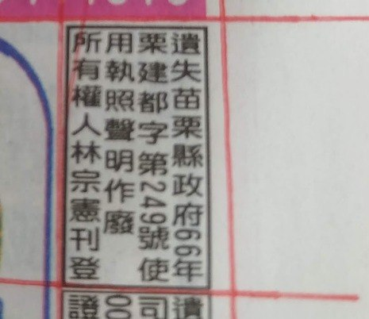

Step 1：登報聲明作廢 ✓ 已完成
📅 2026/07/30 完成
因建物使用執照遺失，依規定需先刊登報紙聲明作廢。
📍 辦理地點
苗栗聯合報社（苗栗市中山路25號）

聯合報刊登之聲明作廢啟事（2026/07/30）
⚠️ 報紙需保留正本，後續送件時需繳交。
Step 2：申請建物第一類謄本 待辦理
至地政事務所申請建物第一類登記謄本，作為後續申請使用執照之證明文件。
Step 3：申請建物使用執照 待辦理
攜帶全部文件至苗栗縣政府建築管理科，正式申請建物使用執照補發。
📎 需提供文件
- 登報之報紙一張（Step 1）
- 建物第一類謄本（Step 2）
- 建物使用執照申請單（現場或官網下載填寫）
- 身分證正反面影本
Step 4：等通知領取 待辦理
送件後等待苗栗縣政府審核通知，攜帶證件至指定地點領取補發之建物使用執照。
Step 5：門牌整編證明（地址不同時） 待辦理
若使用執照上的建物地址與現在門牌不同（例如舊門牌已整編為正展路22號），需先至戶政事務所申請「門牌整編證明」，台電才受理新增電錶（用電新設）申請。
📍 辦理地點
建物所在地的戶政事務所（苗栗市：苗栗市戶政事務所）
📎 備妥文件
- 身分證
- 印章
- 建物使用執照（Step 4 補發取得的正本）
- 房屋所有權狀（如現場要求）
⚠️ 申請通過後取得的「門牌整編證明」，請連同使用執照一併保存——向台電申請新增電錶時兩件都要附。
Step 6：台電申請新增電錶 待辦理
憑使用執照與門牌整編證明，向台電（苗栗區營業處）申請用電新設／新增電錶。
📎 備妥文件
- 建物使用執照（Step 4）
- 門牌整編證明（Step 5，地址有整編時必備）
- 身分證、印章
📍 辦理地點
台電苗栗區營業處（可臨櫃或台電官網線上申請「新設用電」）